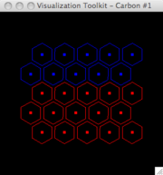

A script to demonstrate how one might display a 2D hex lattice in VTK. By defining a dodecahedral(?) glyph, the analog should be possible in 3D.
#!/usr/bin/env python
# hex-lattice
import math
import vtk
pts = vtk.vtkPoints()
verts = vtk.vtkCellArray()
scalars = vtk.vtkFloatArray()
#vectors = vtk.vtkFloatArray()
#vectors.SetNumberOfComponents(3)
#pd.GetPointData().SetVectors(vectors)
#math = vtk.vtkMath()
size = 300
# mapping to hex (p.9 User's Manual):
c1 = math.sqrt(3)/2.0
c2 = math.sqrt(3)/3.0
print 'c1,c2=',c1,c2
# if doing a 3-D lattice
#c3 = math.sqrt(6)/3.0
x0 = 0.0
count = 0
nx = ny = 50
nx = ny = 10
nx = ny = 5
maxCellType0 = nx*ny*0.57
for iy in range(ny):
y = c1*iy + c2
for ix in range(nx):
if (iy % 2):
x = ix
else:
x = ix + 0.5
# print x,y
pts.InsertNextPoint(x,y,0.0)
if count < maxCellType0: sval = 0.0
else: sval = 1.0
scalars.InsertNextValue(sval)
# verts.InsertNextCell(1)
# verts.InsertCellPoint(count)
count = count + 1
print 'count =',count
for i in range(count):
verts.InsertNextCell( 1 )
verts.InsertCellPoint( i )
# create a single hexagon-shaped glyph
gs_points = vtk.vtkPoints()
gs_cell = vtk.vtkCellArray()
R = 0.5 # vary this to allow more/less space between glyphs
two_pi = 2.0*math.pi
theta = 22.5
thetaDel=two_pi/6.0
x=R*math.cos(theta)
y=R*math.sin(theta)
gs_points.InsertNextPoint(x,y,0)
for idx in range(5):
theta += thetaDel
x=R*math.cos(theta)
y=R*math.sin(theta)
gs_points.InsertNextPoint(x,y,0)
gs_cell.InsertNextCell(6)
gs_cell.InsertCellPoint(0)
gs_cell.InsertCellPoint(1)
gs_cell.InsertCellPoint(2)
gs_cell.InsertCellPoint(3)
gs_cell.InsertCellPoint(4)
gs_cell.InsertCellPoint(5)
gs = vtk.vtkPolyData()
gs.SetPoints(gs_points)
gs.SetPolys(gs_cell)
# creating/display the lattice verts is optional
vertsPD = vtk.vtkPolyData()
vertsPD.SetPoints(pts)
vertsPD.SetVerts(verts)
vertsPD.GetPointData().SetScalars(scalars)
vertsMapper = vtk.vtkPolyDataMapper()
vertsMapper.SetInput(vertsPD)
vertsMapper.SetScalarRange(0,1)
vertsMapper.ScalarVisibilityOn()
vertsActor = vtk.vtkActor()
vertsActor.SetMapper(vertsMapper)
vertsActor.GetProperty().SetPointSize(5.0)
#---------------------------------------
glypher = vtk.vtkGlyph3D()
glypher.SetInput(vertsPD)
#glypher.SetSource(0,gs.GetOutput())
#glypher.SetSource(1,gs1.GetOutput())
#glypher.SetSource(2,gs2.GetOutput())
#glypher.SetSource(0,gs2.GetOutput())
#glypher.SetSource(0,gs.GetOutput())
glypher.SetSource(0,gs)
glypher.SetIndexModeToScalar()
glypher.SetRange(0,1)
glypher.SetScaleModeToDataScalingOff()
glyphMapper = vtk.vtkPolyDataMapper()
glyphMapper.SetInput(glypher.GetOutput())
glyphMapper.SetScalarRange(0,1)
glyphMapper.ScalarVisibilityOn()
glyphActor = vtk.vtkActor()
glyphActor.SetMapper(glyphMapper)
glyphActor.GetProperty().SetRepresentationToWireframe()
#---------------------------------------
ren1 = vtk.vtkRenderer()
ren1.ResetCamera()
renWin = vtk.vtkRenderWindow()
renWin.AddRenderer(ren1)
iren = vtk.vtkRenderWindowInteractor()
iren.SetRenderWindow(renWin)
# Add the actors to the renderer, set the background and size.
# Whichever actor is added last gets rendered over the other.
ren1.AddActor(vertsActor)
ren1.AddActor(glyphActor)
ren1.SetBackground(0,0,0)
renWin.SetSize(size,size)
renWin.Render()
#iren.Initialize()
iren.Start()
